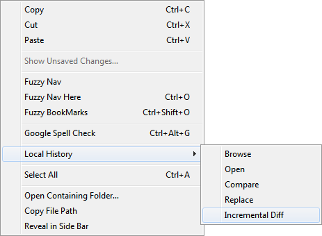
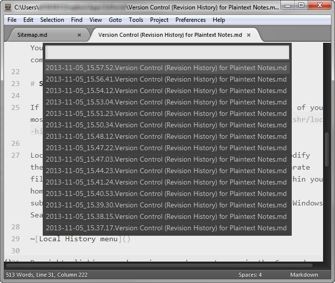
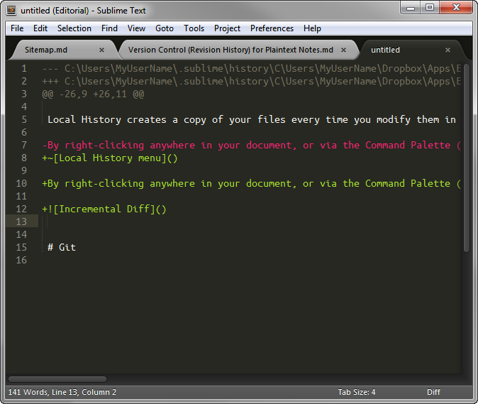

Version Control (Revision History) for Plaintext Notes and Drafts
What is version control?
Version control is an essential element to my plaintext notes system. Saving intermediate versions of your files, either in a version control system or in incremental backups, helps protect you from accidental deletions and changes to your notes that inevitably occur. I don't use my old revisions that often, but when I do, I am extremely grateful for them.
Version control options
There are several options for version control on Windows. Feel free to use one or more of the following methods, listed from the least amount of effort to the most amount of effort required to set them up.
Windows Shadow Copy
Windows Shadow Copy saves multiple versions of your files, but only if it is set up to do so. This feature has never been set up on any work computer I've used, so I can't cover it here or remark upon its usefulness.
Dropbox
The cloud file syncing service Dropbox, beyond just syncing files between devices, also saves snapshots of your files each time you save them. You can view previous versions on its web site or from within top-notch Dropbox-enabled apps like Editorial on iPad. For most people, this is all the version control they need, and I highly recommend using it.
The downside To Dropbox, though, is that you have to send your files to Dropbox, which is a third party. That may not be appropriate for work notes, which, in my case, are highly confidential. For that reason alone I do not put my work notes into Dropbox, and have to look elsewhere for revision history. Also, if you are in a locked-down computing environment, you might not be able to install or access Dropbox on your work computer.
If you can use Dropbox for your files, I heartily encourage you to do so. (Sign up with my referral link!) You get an offsite backup, automatic revision history, and compatibility with hundreds of mobile and web apps.
Sublime Text package: Local History
If you want something simple that provides version control of your most recent notes on our own computer, the Local History package is for you.
Local History creates a copy of your files every time you modify them in Sublime Text. Each file revision is stored in a separate file (with full path) inside the .sublime/history folder within your home directory (that is, typically, C:\Users\MyUserName\.sublime\history). (You may want to exclude that folder from Windows Searches.)
By right-clicking anywhere in your document, or via the Command Palette (type control+shift+p then select the "Local History: Incremental Diff" command), you can call up Local History to browse revisions, or, even better, to view an incremental diff, which are the differences between your current file and any prior version from the history.
Step 1: Pull a diff from the menu.

Step 2: Select the prior version to compare your file to.

Step 3: View the diff.

I use Local History in addition to the next option, Git, to provide a belt-and-suspenders approach to version history.
Git
If you know what Git is, you may want to use it for your plaintext files. See the next article for instructions how to set up Git for version control.